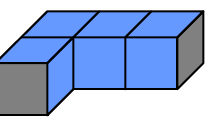
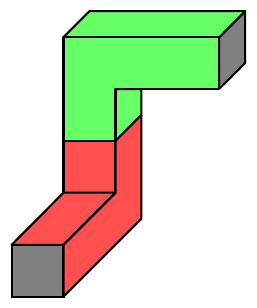
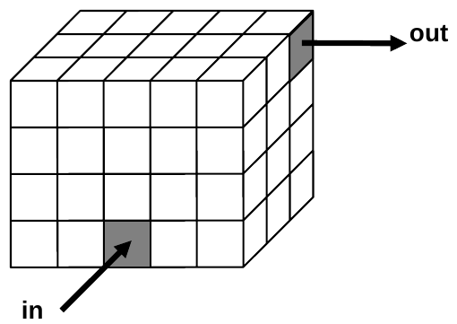

ICPC World Finals 2008 · Problem A
You are a technician for the Air Conditioning Machinery company (ACM). Unfortunately, when you arrive at a customer site to install some air conditioning ducts, you discover that you are running low on supplies. You have only six duct segments, and they are all of the same kind, called an “elbow.”
You must install a duct in a confined space: a rectangular prism whose sides are multiples of a unit length. Think of the confined space as consisting of an array of unit cubes. Each elbow occupies exactly four unit cubes, as shown in Figure 1 below. A unit cube can be occupied by at most one elbow. Each elbow has exactly two openings, as indicated by the gray squares in the elbow shown in Figure 1. You may assemble the elbows into longer ducts, but your duct must be completely contained inside the given space. One way to connect two elbows is shown in Figure 2. Your task is to connect an inflow to an outflow. The inflow and the outflow are located on the exterior surface of the confined space, aligned with the unit cubes, as shown in Figure 3. To keep expenses down, you must accomplish this task while using the minimum number of elbows.



The input consists of several test cases, each of which consists of a single line containing eleven input values separated by blanks. The input values for each test case are as follows.
The first three input values are integers (xmax, ymax, and zmax) that indicate the size of the confined space in the x, y, and z dimensions, respectively. Each unit cube in the confined space can be identified by coordinates (x, y, z) where 1 ≤ x ≤ xmax, 1 ≤ y ≤ ymax, and 1 ≤ z ≤ zmax. xmax, ymax, and zmax are all positive and not greater than 20.
The next three input values are integers that indicate the location of the inflow by identifying the x, y, and z coordinates of the unit cube that connects to the inflow.
The next input value is a two-character string that indicates the direction of the inward flow, using one of the following codes: +x, -x, +y, -y, +z, -z. The inflow connection is on the face of the unit cube that receives this inward flow. For example, if the data specifies an inflow direction of +y, the inflow connection is on the face of the unit cube that faces in the negative y direction.
The next three input values are integers that indicate the location of the outflow by identifying the x, y, and z coordinates of the unit cube that connects to the outflow.
The last input value is a two-character string that indicates the direction of the outward flow, using the same codes described above. The outflow connection is on the face of the unit cube that generates this outward flow. For example, if the data specifies an outflow direction of +y, the outflow connection is on the face of the unit cube that faces in the positive y direction.
The last line of the input file consists of a single zero to indicate end of input.
For each test case, print the case number (starting with 1) followed by the minimum number of elbows that are required to connect the inflow to the outflow without going outside the confined space. If the task cannot be accomplished with your supply of six elbow segments, print the word Impossible instead. Use the format in the sample data.
5 4 3 3 1 1 +z 5 4 3 +x 5 4 3 3 1 1 +z 1 2 3 -x 0
Case 1: 2 Case 2: Impossible